Class recorder: Una aplicación para grabación y publicación de vídeos docentes
Autor: Carlos Ruiz BallesterosTutor: Micael Gallego
1.1 Introducción - Motivación
Problemas más comunes al grabar clases
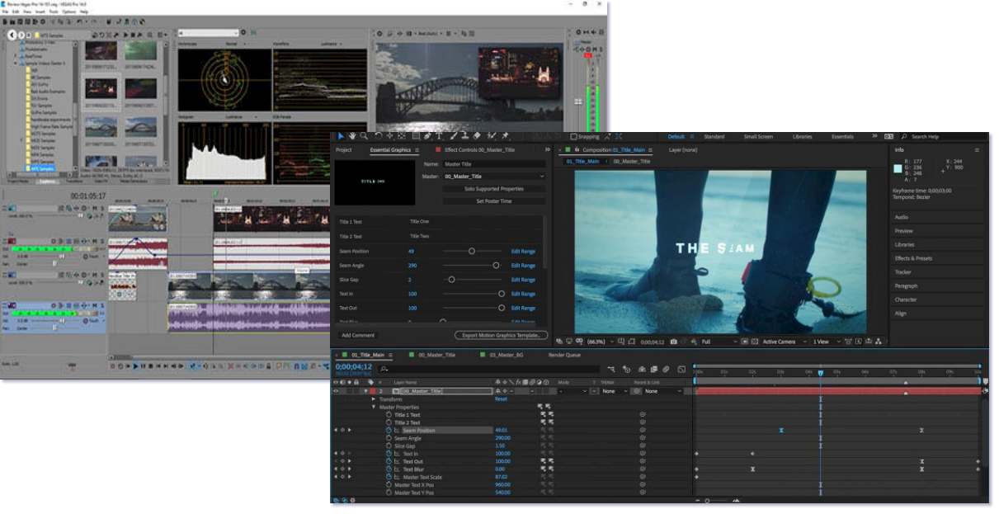
- Multitud de herramientas con las que grabar.
- Aprendizaje de estas herramientas.
- Grabación del audio de las clases. ¿Móvil o Pc?
1.2 Introducción - Objetivos
- Crear un único flujo de trabajo.
- Una sola aplicación para Windows y Linux.
- Aplicación móvil para controlar grabación y grabar audio.
1.2 Introducción - Objetivos.
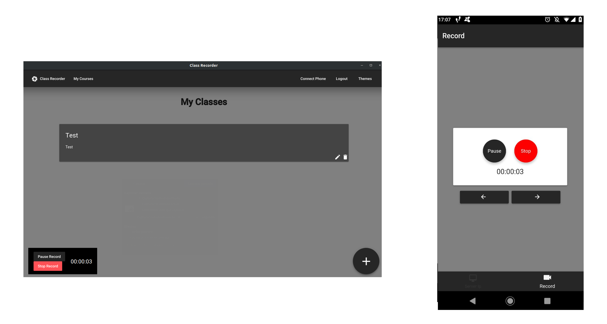2 Tecnologías - Objetivos.
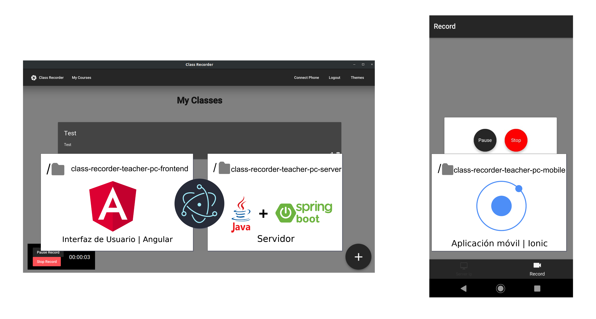2. Tecnologías
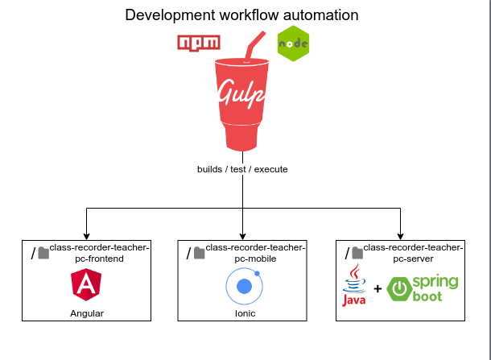2. Tecnologías
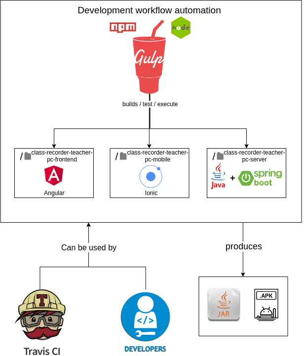2. Tecnologías
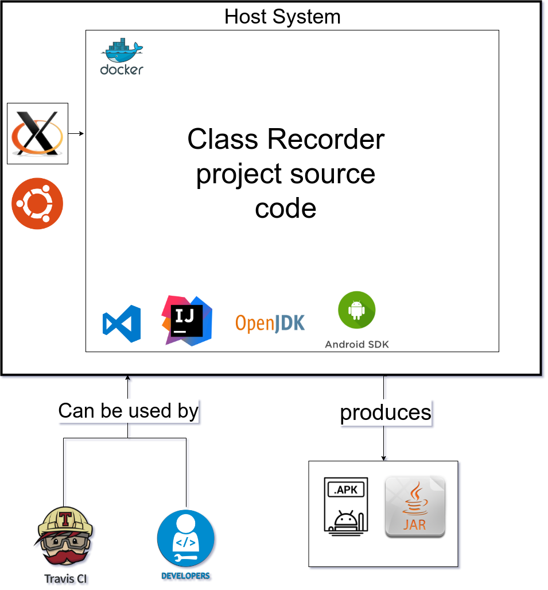2. Tecnologías
Documentación como código
Toda la documentación se ha realizado en Markdown en repositorios de código.
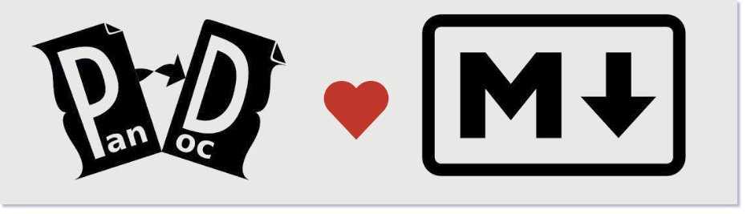La presente memoria se ha convertido a LaTeX con el uso de Pandoc
2. Tecnologías
Electron para distribuir la aplicación de escritorio.
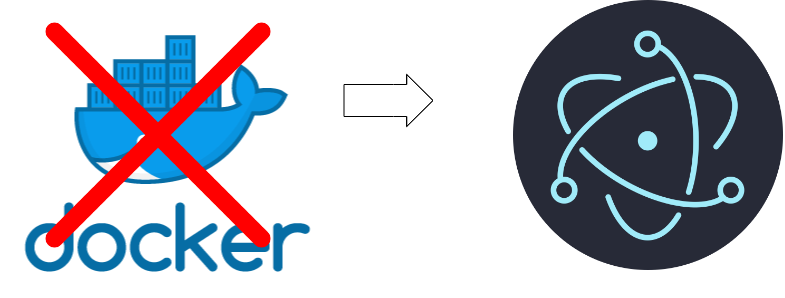¿Por qué no usar Docker para empaquetar Class Recorder?
- Incompatibilidades con servidor de ventanas de Linux X11
- No es User-Friendly para los que no saben desarrollar
- Electron facilita la instalación
2. Tecnologías
Electron para distribuir la aplicación de escritorio.
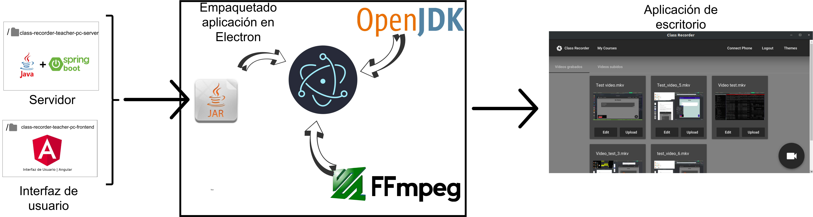3. Arquitectura, diseño y desarrollo.
Arquitectura
- Aplicación móvil y servidor de aplicación de escritorio se comunican en local
- WebSockets
- Servidor de la aplicación de escritorio se encarga de las grabaciones
- Publicar vídeos a Youtube
3. Arquitectura, diseño y desarrollo.
Diseño - Módulo Ffmpeg Wrapper
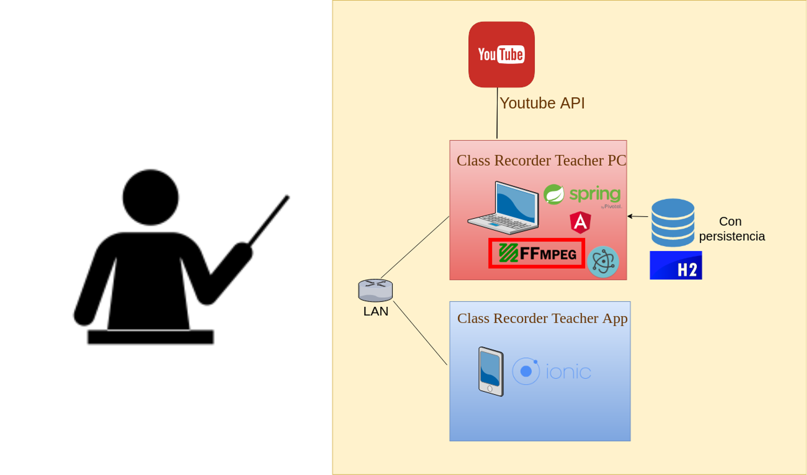3. Arquitectura, diseño y desarrollo.
Diseño - Módulo Ffmpeg Wrapper

- Ffmpeg es una herramienta CLI de conversión y edición de vídeos
- Permite grabar el escritorio.
- Es multiplataforma, por lo cual podríamos usarlo tanto en Windows como en Linux
3. Arquitectura, diseño y desarrollo.
Diseño - Módulo Ffmpeg Wrapper
El servidor de la aplicación de escritorio se encargará de ejecutar Ffmpeg en el sistema Windows/Linux para gestionar las grabaciones, cortar los vídeos y juntarlos
3. Arquitectura, diseño y desarrollo.
Diseño - Módulo Ffmpeg Wrapper
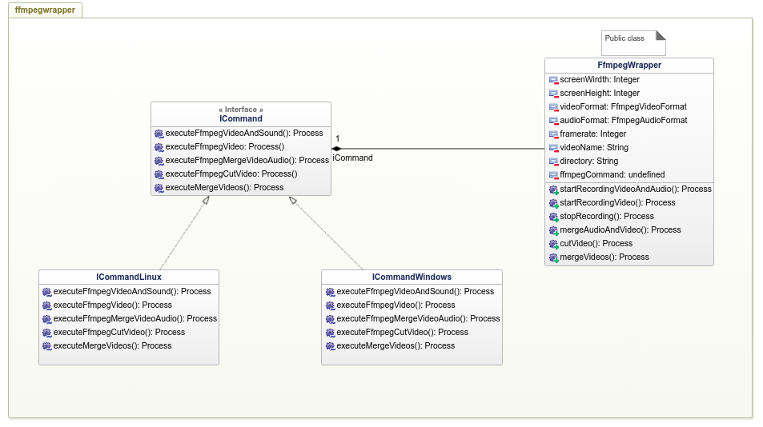3. Arquitectura, diseño y desarrollo.
Diseño - Módulo Youtube
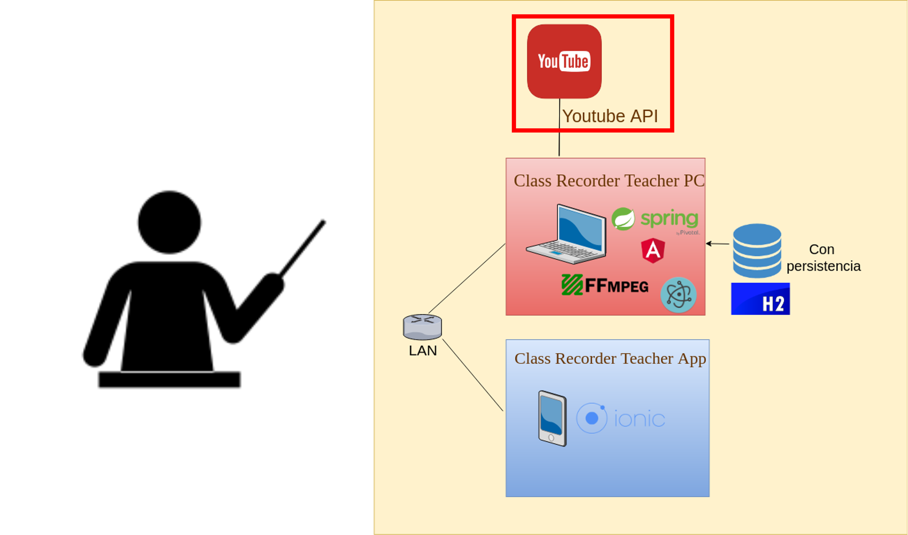3. Arquitectura, diseño y desarrollo.
Diseño - Módulo Youtube Uploader
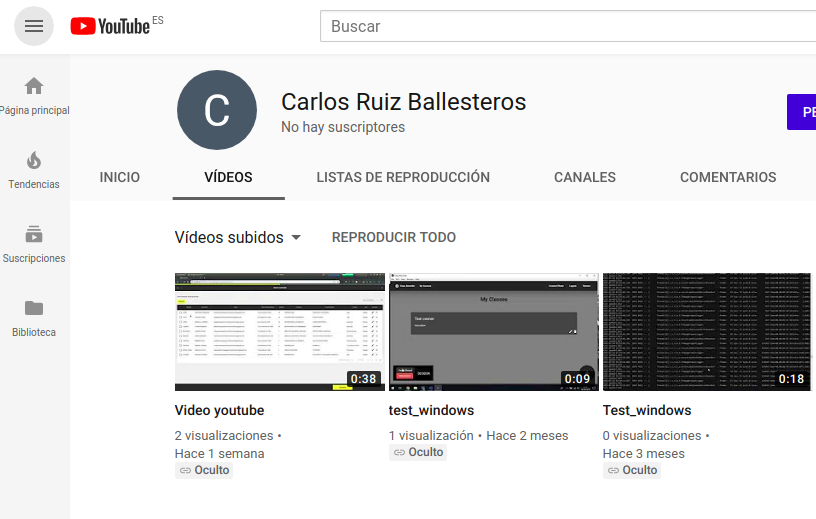
- Los vídeos deben poder publicarse, y estar disponibles para los alumnos
- Utilizamos una API específica de Google para subir vídeos a Youtube
3. Arquitectura, diseño y desarrollo.
Diseño - Comunicación Aplicación escritorio y móvil
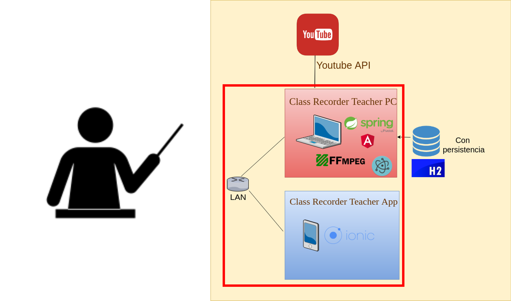3. Arquitectura, diseño y desarrollo.
Diseño - Websockets Para controlar la grabación

- Necesitamos controlar la grabación.
- La grabación debe poder controlarse desde la aplicación móvil o desde la aplicación web
- Necesitamos que ambos dispositovos (PC y móvil) sepan del estado de la grabación.
3. Arquitectura, diseño y desarrollo.
Diseño - Websockets Para controlar la grabación
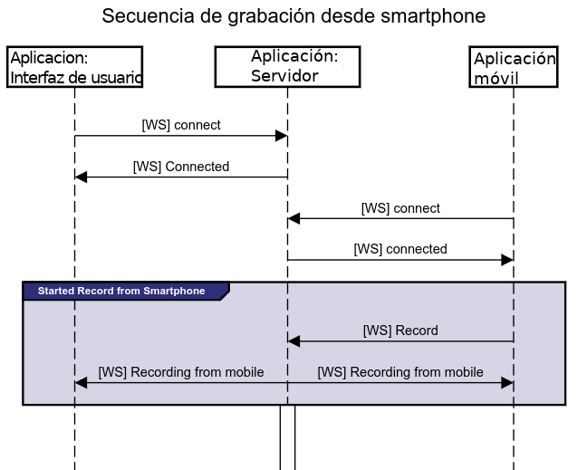3. Arquitectura, diseño y desarrollo.
Diseño - Modelo de Entidad Relación
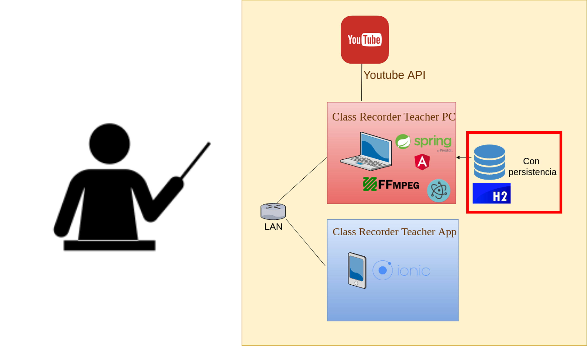3. Arquitectura, diseño y desarrollo
Desarrollo en Spring Boot
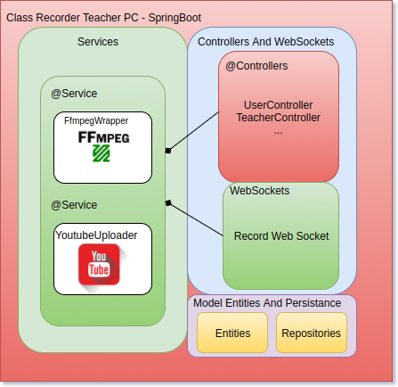4. Pruebas y releases automáticas.
El sistema de travis se ejecuta por commit y los pasos en concreto del sistema de CI/CD son los
siguientes:
1. Clona el repositorio de class-recorder principal.
2. Levanta la infraestructura necesaria para la aplicación con docker compose.
3. Instala las dependencias necesarias.
4. Inicia el servidor principal de la aplicación de grabación
5. Ejecuta los test e2e del frontend de pc.
6. Crea los binarios de la aplicación.
4. Pruebas y releases automáticas.
Resultados Travis
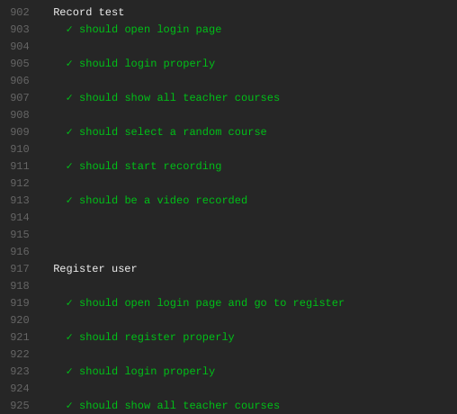4. Pruebas y releases automáticas.
Releases
Por cada commit marcado con una etiqueta (tag), se crea una release, con los binarios resultantes automáticamente.
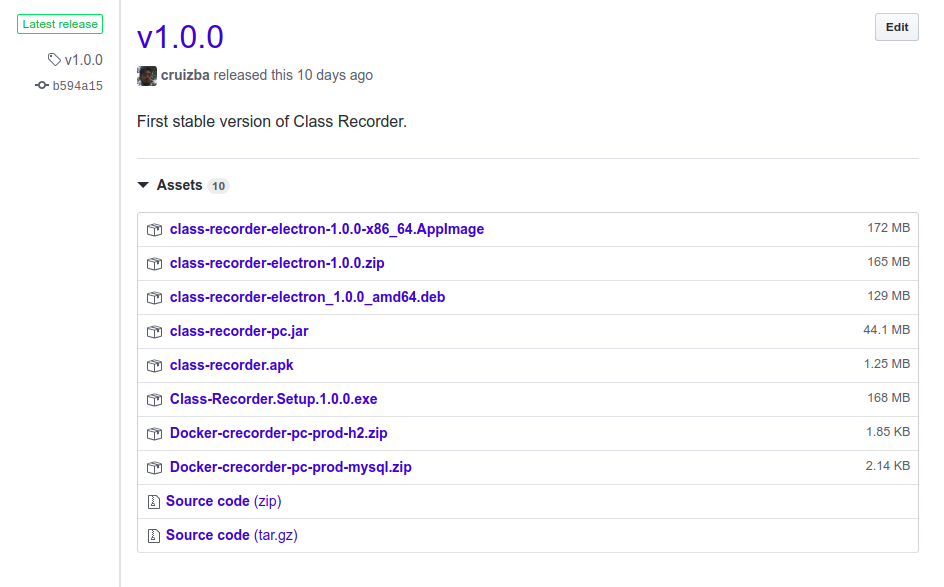5. Conclusiones y mejoras
Lecciones aprendidas:
- Modularizar y desacoplar el código es siempre una buena práctica
- Los test e2e cubren mucha lógica de negocio y facilita la detección de errores, pero es difícil saber las causas de ellos
- Hacer testing sobre sistemas que producen, procesan o graban audio, no es trivial
- Angular es muy conveniente como framework hoy día para hacer cualquier tipo de aplicación.
5. Conclusiones y mejoras
Líneas futuras:
- Grabar entradas de vídeo en paralelo, como webcams o cámaras usb, y poder cambiar de camara de grabación a través del móvil
- Controlar aspectos del ordenador desde el movil, como mover el raton, rodear o señalar cosas
- Sincronizar la plataforma con otros servicios de distribución de vídeos, servicios propios, etc.
- Añadir un mecanismo que nos permita descartar tomas de vídeo al instante desde el móvil